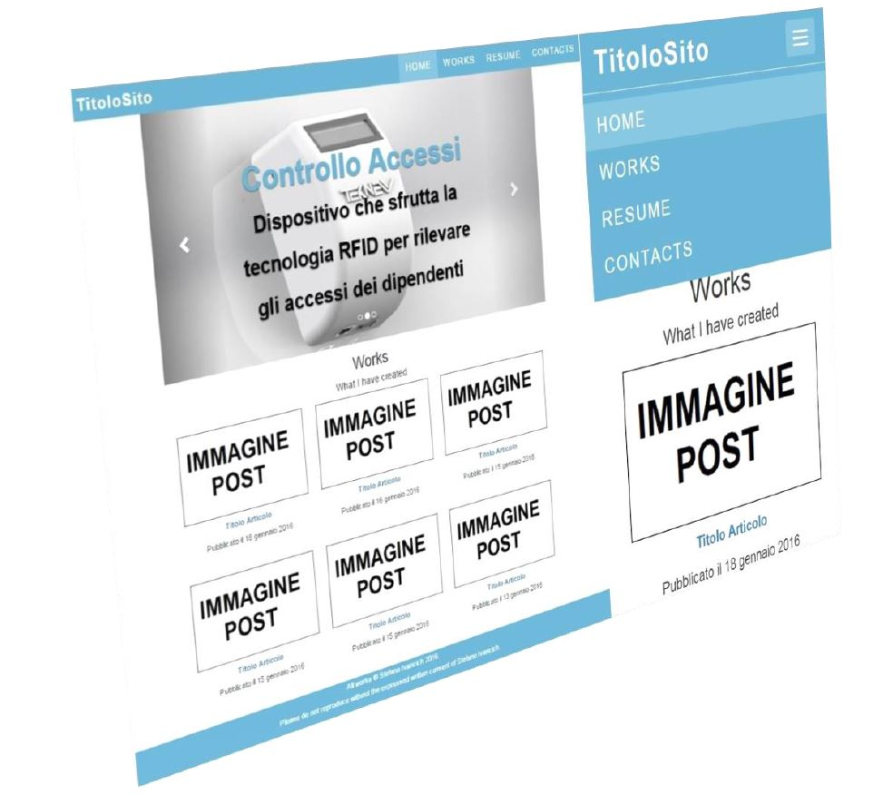
La pagina di base, ovvero quella che rimane la stessa su tutte le pagine del sito, come un blog standard è composta di 3 sezioni: Header, Main section e Footer.
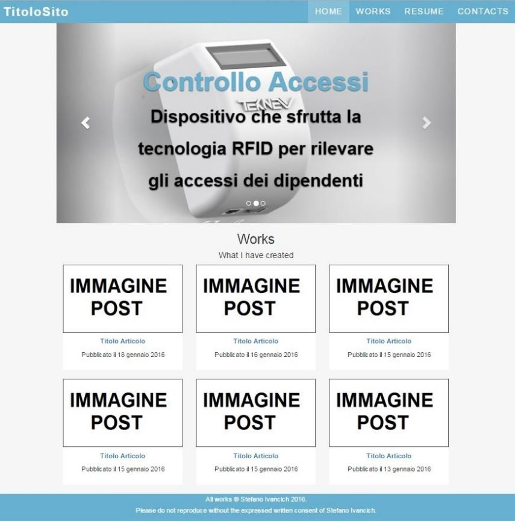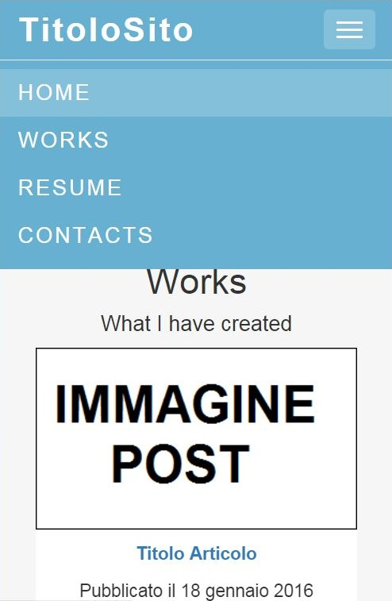
<meta name="viewport" content="width=device-width, initial-scale=1"><!--Utilizzare la grandezza del dispositivo--> <link rel="stylesheet" href="https://maxcdn.bootstrapcdn.com/bootstrap/3.3.5/css/bootstrap.min.css"><!--Stili di bootstrap--> <link rel="stylesheet" href="style.css"> <!--Mio stile aggiuntivo--> <script src="https://ajax.googleapis.com/ajax/libs/jquery/1.11.3/jquery.min.js"></script> <script src="https://maxcdn.bootstrapcdn.com/bootstrap/3.3.5/js/bootstrap.min.js"></script> <!--Bootstrap-->
<body>
<!-- Header -->
<nav class="navbar navbar-default navbar-fixed-top" role="navigation">
<div class="container">
<div class="navbar-header">...</div><!-- Logo -->
<div class="collapse navbar-collapse" id="mainNavbar">...</div><!-- Menu Items -->
</div>
</nav>
<!-- Main Section -->
...
<!-- Footer -->
<footer class="container-fluid text-center">
<p>All works © Nome Cognome 2016.<br>
Please do not reproduce without the expressed written consent of Nome Cognome.</p>
</footer>
</body>
body {
padding-top: 50px; /*Per lasciare spazio alla NavBar*/
font: 400 15px Lato, sans-serif;
line-height: 1.8;
}
.bg-grey {
background-color: #f6f6f6;
}
L’header, ovvero la sezione di pagina che compare in alto è di colore blu chiaro e contiene al suo interno il Logo del sito e il menu contenente il link alle varie pagine, entrambi sono posti nella stessa riga. Grazie a bootstrap se lo schermo del dispositivo è piccolo il menù scopare e al suo posto compare un bottone che se premuto fa scorrere il menu in basso.
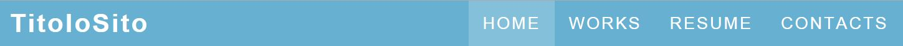
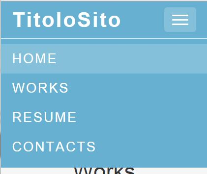
<nav class="navbar navbar-default navbar-fixed-top" role="navigation">
<div class="container">
<div class="navbar-header">...</div><!-- Logo -->
<div class="collapse navbar-collapse" id="mainNavbar">...</div><!-- Menu Items -->
</div>
</nav>
.navbar {
margin-bottom: 0;
background-color: #67b0d1; /*Sfondo di colore Azzurro*/
z-index: 9999;
border: 0;
font-size: 18px !important;
line-height: 1.42857143 !important;
letter-spacing: 2px;
border-radius: 0;
font-family: Montserrat, sans-serif;
}
Questo è composto da un link in font “bold 28px” del font “Montserrat, sans-serif”, ma è possibile metterci anche un immagine.
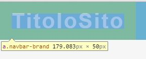
<div class="navbar-header">
<!-- Bottone che sostituisce la lista -->
<button type="button" class="navbar-toggle" data-toggle="collapse" data-target="#mainNavbar">
<span class="icon-bar"></span>
<span class="icon-bar"></span>
<span class="icon-bar"></span>
</button>
<a class="navbar-brand" href="index.php">TitoloSito</a>
</div>
.navbar .navbar-brand {
color: #fff !important;
font-weight: bold;
font-size: 28px !important;
}
Il navigation menu è composto da una lista contenente diversi link alle pagine anch’esso di colore azzurro. Quando si passa sopra col mouse ad un elemento della lista, questo diventa più chiaro. Se lo schermo del dispositivo è piccolo il navigation menu scompare e appare al suo posto un bottone che se premuto fa comparire il navigation menu sotto forma di lista.
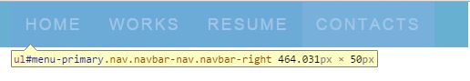
<div class="collapse navbar-collapse" id="mainNavbar">
<ul class="nav navbar-nav navbar-right">
<li class="active"><a href="#">Home</a></li>
<li><a href="#">Page 1</a></li>
<li><a href="#">Page 2</a></li>
<li><a href="#">Page 3</a></li>
</ul>
</div>
/*Elementi menu navbar*/
.navbar-default .navbar-nav li a{
color: #fff !important;
transition: all .2s ease-in-out;
transition-property: all;
transition-duration: 0.2s;
transition-timing-function: ease-in-out;
transition-delay: initial;
}
/*Quando si clicca sugli elementi del menu navbar*/
.navbar-default .navbar-nav>.active>a,
.navbar-default .navbar-nav>.active>a:focus,
.navbar-default .navbar-nav>.active>a:hover,
.navbar-default .navbar-nav li a:hover,
.navbar-default .navbar-nav li a:focus{
background-color: rgba(255,255,255,.2);
color: #fff; /*Testo di colore bianco*/
}
/*Bottone della navbar*/
.navbar-default .navbar-toggle {
border-color: transparent;
color: #fff !important; /*Sfondo di colore bianco*/
}
.navbar-default .navbar-toggle .icon-bar {
background-color: #fff; /*Testo di colore bianco*/
}
.navbar-default .navbar-toggle:hover,
.navbar-default .navbar-toggle:focus{
background-color: rgba(255,255,255,.2);
}
Il footer è quella parte di pagina di colore azzurro collocata alla fine della pagina, e contiene il nome dell’autore del sito e i copyright.
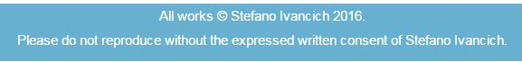
<footer class="container-fluid text-center"> <p>All works © Stefano Ivancich 2016.<br> Please do not reproduce without the expressed written consent of Stefano Ivancich.</p> </footer>
footer{
background-color: #67b0d1; /*Sfondo di colore Azzurro*/
color: #fff; /*Testo di colore bianco*/
}
La main section, di sfondo bianco, possiede il testo e diversi contenuti scelti dall’utente. Al suo interno ci sono diversi tipi di pagina:
.centered{
margin: 0 auto;
display: block;
max-width: 900px;
}
La pagina HOME contiene un Carousel, ovvero una sequenza di immagini a scorrimento, e una lista con immagini di grandezza 300x170px degli articoli, con titolo dell’articolo e data di pubblicazione.
<!-- Carousel -->
<div class="container-fluid bg-grey">
<div id="myCarousel" class="carousel slide centered bg-grey" data-ride="carousel">
<!-- Indicators -->
<ol class="carousel-indicators">
<li data-target="#myCarousel" data-slide-to="0" class="active"></li>
<li data-target="#myCarousel" data-slide-to="1"></li>
<li data-target="#myCarousel" data-slide-to="2"></li>
</ol>
<!-- Wrapper for slides -->
<div class="carousel-inner" role="listbox">
<div class="item active">
<img src="LinkImmagine" class="center-block">
<div class="carousel-caption">
<h3>TITOLO ARTICOLO</h3>
<p>Breve descrizione</p>
</div>
</div>
<div class="item active">
<img src="LinkImmagine" class="center-block">
<div class="carousel-caption">
<h3>TITOLO ARTICOLO</h3>
<p>Breve descrizione</p>
</div>
</div>
<div class="item active">
<img src="LinkImmagine" class="center-block">
<div class="carousel-caption">
<h3>TITOLO ARTICOLO</h3>
<p>Breve descrizione</p>
</div>
</div>
</div>
<!-- Left and right controls -->
<a class="left carousel-control" href="#myCarousel" role="button" data-slide="prev">
<span class="glyphicon glyphicon-chevron-left" aria-hidden="true"></span>
<span class="sr-only">Previous</span>
</a>
<a class="right carousel-control" href="#myCarousel" role="button" data-slide="next">
<span class="glyphicon glyphicon-chevron-right" aria-hidden="true"></span>
<span class="sr-only">Next</span>
</a>
</div>
</div>
<div class="container-fluid text-center bg-grey">
<div class="row centered">
<h2>Works</h2>
<h4>What I have created</h4>
<!-- Articoli-->
<div class="col-sm-4">
<div class="thumbnail">
<a href="linkPost"><img src="Immagine300x170"></a>
<p><a href="linkPost"><strong>Titolo</strong></a></p>
<p>Pubblicato il data</p>
</div>
</div>
</div>
</div>
/***************** CAROUSEL *********************************/
.carousel-inner img {
-webkit-filter: grayscale(90%);
filter: grayscale(90%); /* make all photos black and white */
width: 100%; /* Set width to 100% */
margin: auto;
}
.carousel-caption h3 {
color: #67b0d1 !important; /*Azzurro*/
font-size: 60px;
font-weight: bold;
}
.carousel-caption p {
color: black !important; /*Azzurro*/
font-size: 40px;
font-weight: bold;
}
@media (max-width: 600px) {
.carousel-caption {
display: none; /* Hide the carousel text when the screen is less than 600 pixels wide */
}
}
/********************HOME***********************/
.thumbnail {
padding: 0 0 15px 0;
border: none;
border-radius: 0;
}
.thumbnail img {
width: 100%;
height: 100%;
margin-bottom: 10px;
}
.thumbnail img:hover{
opacity: 0.3;
}
Pagina in cui appare l’articolo con il suo contenuto.
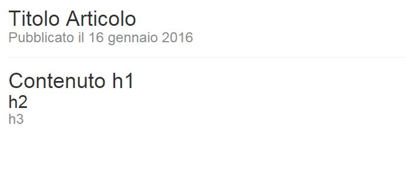
<div class="container-fluid centered post">
<article>
<header>
<hgroup>
<h1>Titolo articolo</h1>
<h3>Pubblicato il Data</h3>
</hgroup>
</header>
<hr>
...CONTENUTO...
</article>
</div>
.post h1{
margin-bottom: 0px; /*Margine per togliere lo spazio tra un titolo e quello sotto*/
}
.post h2{
margin-bottom: 0px; /*Margine per togliere lo spazio tra un titolo e quello sotto*/
margin-top: 0px;
}
.post h3{
color:#8d8d8d; /*Grigio chiaro*/
margin-bottom: 0px; /*Margine per togliere lo spazio tra un titolo e quello sotto*/
margin-top: 0px;
}
.post p{
margin-bottom: 0px;
margin-top: 0px;
}
Pagina dove appare una lista degli articoli con una breve descrizione divisi per anno. Esempio:
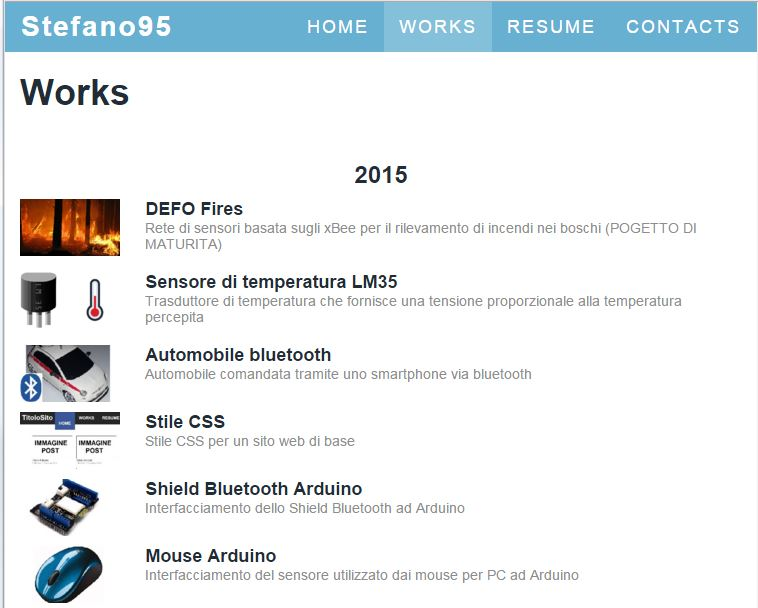
<div class="container-fluid centered works">
<h1>Works</h1>
<h4 align="center">Anno</h4>
<div class="row">
<div class="col-xs-4 col-sm-2">
<a href="LinkArticolo"><img src="LinkImmagine" width="100" /></a>
</div>
<div class="col-xs-8 col-sm-10">
<a href="LinkArticolo">
<h2>Titolo Articolo</h2>
</a>
<h3>Breve Descrizione</h3>
</div>
</div>
...
</div>
.works .row{
margin-bottom: 10px; /*Margine per distanziare gli elementi della lista*/
}
.works img{
opacity: 1;
}
.works img:hover{
opacity: 0.3;
}
.works h1{
font:bold 36px Arial;
color: #222c36; /*Grigio scurissimo*/
}
.works h2{
font:bold 18px Arial;
color: #222c36; /*Grigio scurissimo*/
margin-bottom: -20px; /*Margine per togliere lo spazio tra un titolo e quello sotto*/
margin-top:-10px;
}
.works h2:hover{
font:bold 18px Arial;
color:#3B5998; /*Sfondo blu*/
}
.works h3{
font:14px Arial;
color:#8d8d8d; /*Grigio chiaro*/
}
.works h4{
font:bold 24px Arial;
color: #222c36; /*Grigio scurissimo*/
}
Pagina dedicata al curriculum. Esempio:
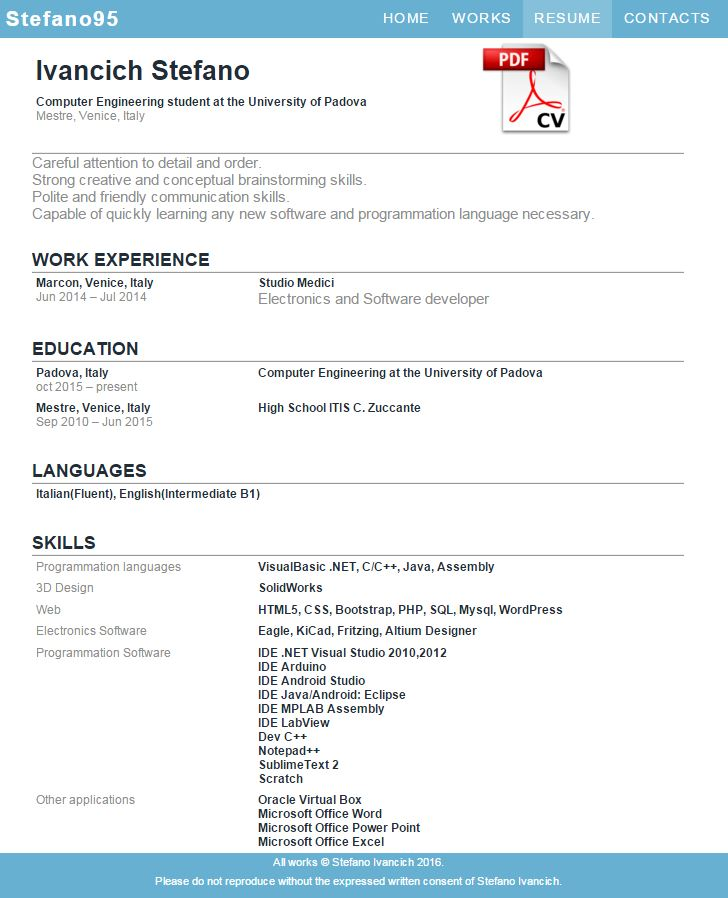
<div class="container centered resume">
<div class="row"> <!--riga-->
<div class="col-sm-8">
<h1>Ivancich Stefano</h1>
<h3><small>Computer Engineering student at the University of Padova</small></h3>
<h4>Mestre, Venice, Italy</h4>
</div>
<div class="col-sm-4">
<a href="http://stefan95.altervista.org../uploads/2015/12/IvancichStefanoCV.pdf"><img src="../uploads/2016/01/DownloadCV.png" height="125"></a>
</div>
</div>
<h2>WORK EXPERIENCE</h2>
<hr>
<div class="row"> <!--riga-->
<div class="col-sm-4">
<p>Marcon, Venice, Italy</p>
<h4>Jun 2014 - Jul 2014</h4>
</div>
<div class="col-sm-8">
<p>Studio Medici</p>
<h3>Electronics and Software developer</h3>
</div>
</div>
<h2>EDUCATION</h2>
<hr>
<div class="row"> <!--riga-->
<div class="col-sm-4">
<p>Padova, Italy</p>
<h4>oct 2015 - present</h4>
</div>
<div class="col-sm-8">
<p>Computer Engineering at the University of Padova</p>
</div>
</div>
<div class="row"> <!--riga-->
<div class="col-sm-4">
<p>Mestre, Venice, Italy</p>
<h4>Sep 2010 - Jun 2015</h4>
</div>
<div class="col-sm-8">
<p>High School ITIS C. Zuccante</p>
</div>
</div>
<h2>LANGUAGES</h2>
<hr>
<div class="row">
<div class="col-sm-12">
<p>Italian(Fluent), English(Intermediate B1)</p>
</div>
</div>
<h2>SKILLS</h2>
<hr>
<div class="row"> <!--riga-->
<div class="col-sm-4">
<h4>Programmation languages</h4>
</div>
<div class="col-sm-8">
<p>VisualBasic .NET, C/C++, Java, Assembly</p>
</div>
</div>
</div>
.resume *{
font:bold 16px Arial;
color: #222c36; /*Grigio scurissimo*/
}
.resume p{
margin: 0;
}
.resume .row{
padding: 5px !important;
}
.resume hr{
margin: 0 auto;
background:rgba(0,0,0,0.4);
height:1;
}
.resume a{
font:16px Arial;
color: #222c36; /*Grigio scurissimo*/
}
.resume a:hover{
font:bold 18px Arial;
color:#8d8d8d; /*Grigio chiaro*/
}
.resume h1{
font:bold 36px Arial;
color: #222c36; /*Grigio scurissimo*/
}
.resume h2{
font:bold 24px Arial;
color: #222c36; /*Grigio scurissimo*/
margin: 0;
}
.resume h3{
font:20px Arial;
color:#8d8d8d; /*Grigio chiaro*/
margin: 0;
}
.resume h4{
font:16px Arial;
color:#8d8d8d; /*Grigio chiaro*/
margin: 0;
}
Pagina dove sono presenti l’indirizzi e-mail, numeri di telefono e altri vari contatti. Esempio:
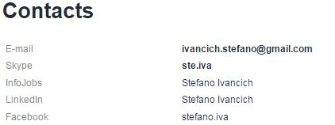
<div class="container centered resume">
<h1>Contacts</h1>
<div class="row"> <!--riga-->
<div class="col-sm-4"><h4>E-mail</h4></div>
<div class="col-sm-8"><p>ivancich.stefano@gmail.com</p></div>
</div>
<div class="row"> <!--riga-->
<div class="col-sm-4"><h4>Skype</h4></div>
<div class="col-sm-8"><p>ste.iva</p></div>
</div>
<div class="row"> <!--riga-->
<div class="col-sm-4"><h4>InfoJobs</h4></div>
<div class="col-sm-8"><p><a href="https://www.infojobs.it/stefano-ivancich.prf">Stefano Ivancich</a></p></div>
</div>
<div class="row"> <!--riga-->
<div class="col-sm-4"><h4>LinkedIn</h4></div>
<div class="col-sm-8"><p><a href="https://it.linkedin.com/in/stefano-ivancich-283081103">Stefano Ivancich</a></p></div>
</div>
<div class="row"> <!--riga-->
<div class="col-sm-4"><h4>Facebook</h4></div>
<div class="col-sm-8"><p><a href="https://www.facebook.com/stefano.iva">stefano.iva</a></p></div>
</div>
</div>
Sono state usati gli stessi stili della pagina RESUME.